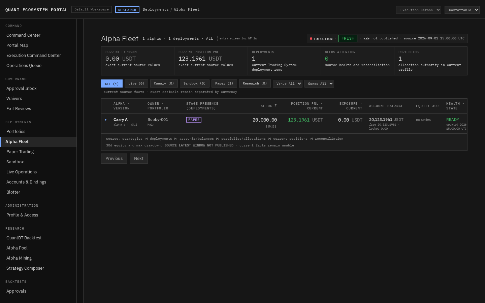

/deployments/alphas — preview build, 1440px, BFF-double sample data (one alpha). Switch to “What changes” to see each region of the proposal marked against it.Alpha Fleet
Fresh · 9sIdentity only · metrics not ready USDT · real-funded13
Group: none ▾4
| Alpha / version | Owner / portfolio | Stages | Allocation ⇅ | Net PnL ⇅ | Unrealized ⇅ | Account balance | Equity 30D | Health · source | QBTS ⇅ |
|---|---|---|---|---|---|---|---|---|---|
| Portfolio: Core · 12 alphas · 15 deployments 5 | |||||||||
| BTC-Trend v3 | asmith Core | LivePaper | 120,000— | +21,430— | +1,120— | 132,980— | — | OK | Pending |
| ↳ Deployment live-0192 · Binance-02 | Live | 80,000 | +14,010 | +700 | 88,200 | Stale 14m | |||
| ETH-Mean v2 | bjones Core · Satellite 2 | CanarySandbox | 76,000— | +12,980— | −430— | 80,100— | — | Needs attention | Pending |
| You own 1 alpha. Fund and peer rows are not loaded. | |||||||||
Showing 50 of 214 authorized alphas · Next 50 · totals are for the whole filtered set 6
BTC-Trend v3 peek 7
Owner asmith · Core · Live + Paper
| Allocation | 120,000— |
| Net PnL · 30D | +21,430— |
| QBTS | Policy pending |
| Source | live-0192 · Stale 14m |
What changes vs today — Alpha Fleet (/deployments/alphas)
| Region | Today (V1, from the screenshot) | Proposed | Why · needs backend | |
|---|---|---|---|---|
| KEPT | Route, stage tabs, expandable deployment rows, source-freshness chip | Works, deep-linked route, ▶ expander | Same route and expander | Existing behaviour is right. |
| CHANGED | KPI strip (exposure, position PnL, deployments, needs attention, portfolios) | Five tiles above the table | One slim summary line + a “Needs attention” filter; the headline numbers move to M01 Overview | The fleet page should be a table first; totals live on Overview. |
| REMOVED | “Research (0)” tab | Sixth tab | Gone; Research is a linked app, not a stage (guide §4.1) | — |
| CHANGED | Filters | Venue and Owner dropdowns | Chips: Portfolio, Owner, Health, More; clear-one / clear-all; all in the URL | Today’s filter state is not deep-linkable. |
| NEW | Search, Group by (≤2 levels), Columns, Compact | None | Search box, group-by menu, column chooser | Search needs FE-008; grouping is within the 2-level backend limit. |
| CHANGED | Columns | Alpha·Version, Owner·Portfolio, Stage presence, Alloc, Position PnL·current, Exposure·current, Account balance, Equity 30D, Health·State | Adds Unrealized PnL and QBTS, sortable headers; Exposure goes to the column chooser | Guide §8.1. Server-side sort, nulls last. QBTS shows “Pending” until policy exists. |
| CHANGED | Missing data wording | Raw codes such as SOURCE_LATEST_WINDOW_NOT_PUBLISHED, “entry screen for WF 2a”, “exact decimals remain separated by currency” | Plain words (“Not available · no NAV series”); the code moves to a tooltip | Needs the public copy dictionary (FE-015). |
| CHANGED | Paging | Previous / Next | “Showing 50 of 214 authorized” + Next 50; group totals from the whole filtered set | Honest counts; no hidden totals. |
| NEW | Row peek drawer | None (row click expands only) | Side drawer with key figures and Open Alpha 360 | Keeps the table context. |
| REMOVED | Technical footnote line | “source: strategies ⋈ deployments ⋈ …” | Moved behind an info icon | Cleaner for web users; still available. |